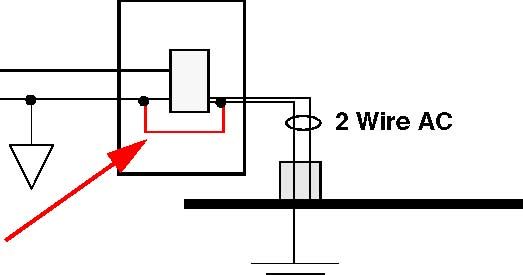

Operating Requirements
Before setting up the system, prepare the operating environment.
Operating Conditions
The following operating conditions must exist in order to operate this equipment safely:
- Indoor use only.
- No exposure to liquids and moisture.
- Dry environment.
- Environmental Rating: IPX0.
- Altitude up to 2000 m.
- Operational temperature range: 0 to 40 °C (32° to 104 °F).
- Maximum relative humidity: 5% to 95% relative humidity, noncondensing.
Standard Electrostatic Precautions
This instrument contains static-sensitive components that are subject to damage from electrostatic discharge (ESD). Use standard ESD precautions when transporting, handling, or using the probe and the target system, when connecting/disconnecting the probe and the target system, and when removing the cover of the instrument.
We recommend using the following precautions:
- Keep high static-producing items, like non-ESD-approved plastics, tape and packaging foam away from the probe and the target system.
| Note | |
|
Consider the above precautions as the minimum requirements for a static controlled environment. |
|
Electrical Requirements
The probe is powered from the external power supply provided with your unit. It can use line voltages of 100-240 VAC (50/60 Hz). The probe tip draws less than from the target system.
We recommend that you use a surge protector between the power supply and AC power.
Target Power Requirements
Several configurations are possible for providing power to the target system. The preferred configuration is for all target DC power supplies to use a 3-wire AC input with an earth (safety) ground and with the earth ground isolated from the DC return. Table 1‑1 shows various AC/DC configurations and the results of using each.
Table 1‑1. Target System Device Power Supply Configuration
The arrow in Figure 1‑3shows the prohibited target power supply connection.
Figure 1‑3.  Prohibited Target Power Supply Connection